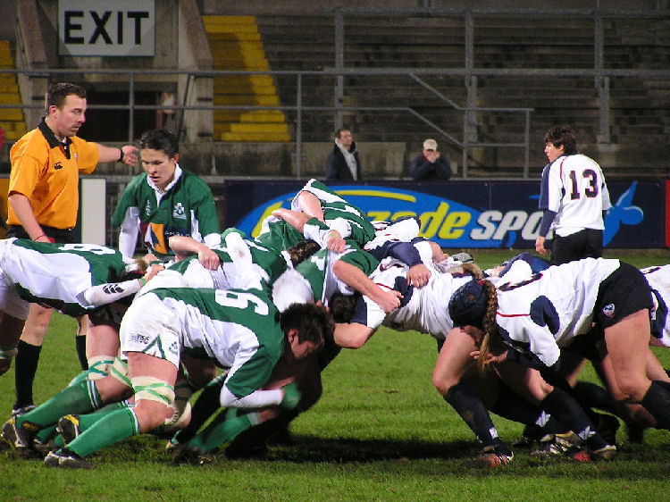
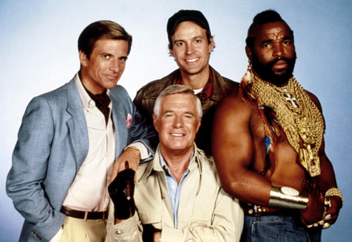
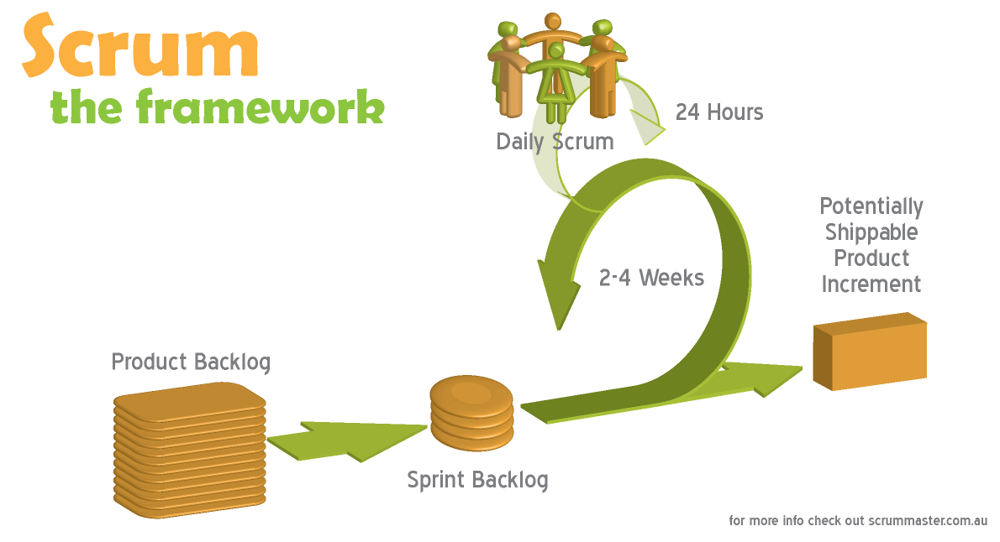
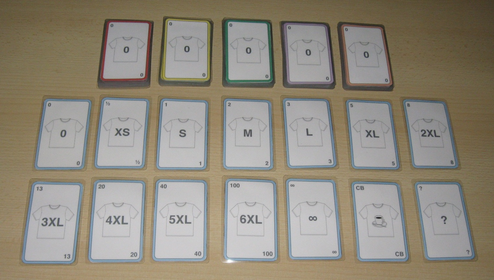
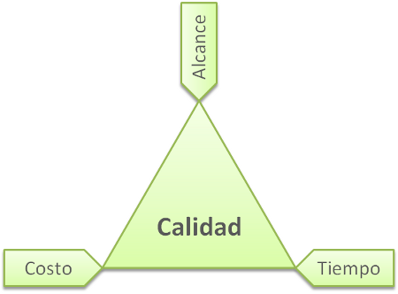
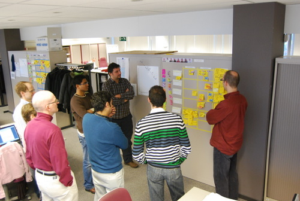

Metodologías Ágiles
Parte organizativa: Agilidad y SCRUM
Una presentación de Iván Tomás
¿Qué es el agilismo?
Principios del agilismo
Individuos e interacciones
sobreprocesos y herramientas
Software funcionando
sobredocumentación extensiva
Colaboración con el cliente
sobrenegociación contractual
Respuesta ante el cambio
sobreseguir un plan
¿Porqué es necesario?
SCRUM

Actores
Product owner
Team member

Scrum master

Ciclo de proyecto

Product backlog
Inicio de sprint
Historias de usuario
Estimación de coste

El triángulo de hierro

Priorización
Desarrollo
Scrum diario

Burndown chart

Fin de sprint
Demo

Retrospectiva
Descanso
Ventajas para el cliente
- Maximizar el ROI
- Ventaja competitiva
- Disminución del Time To Market
- Adaptación a necesidades reales
...y para el proveedor
- Riesgos más asumibles
- Equipos más motivados
- Equipos más preparados
- Fidelización de clientes
Hemos probado el baseball y no nos gusta
Bibliografía
- Scrum y XP desde las trincheras, Henrik Kniberg, InfoQ, 2007
- Scrum Primer, Pete Deemer et al., http://www.scrumprimer.org/
- Kanban and Scrum - making the most of both, Henrik Kniberg, InfoQ 2009
- Agile Management: Leadership in an Agile Environment, Ángel Medinilla, Springer 2011
- Agile Manifesto, Kent Beck et al., http://agilemanifesto.org/